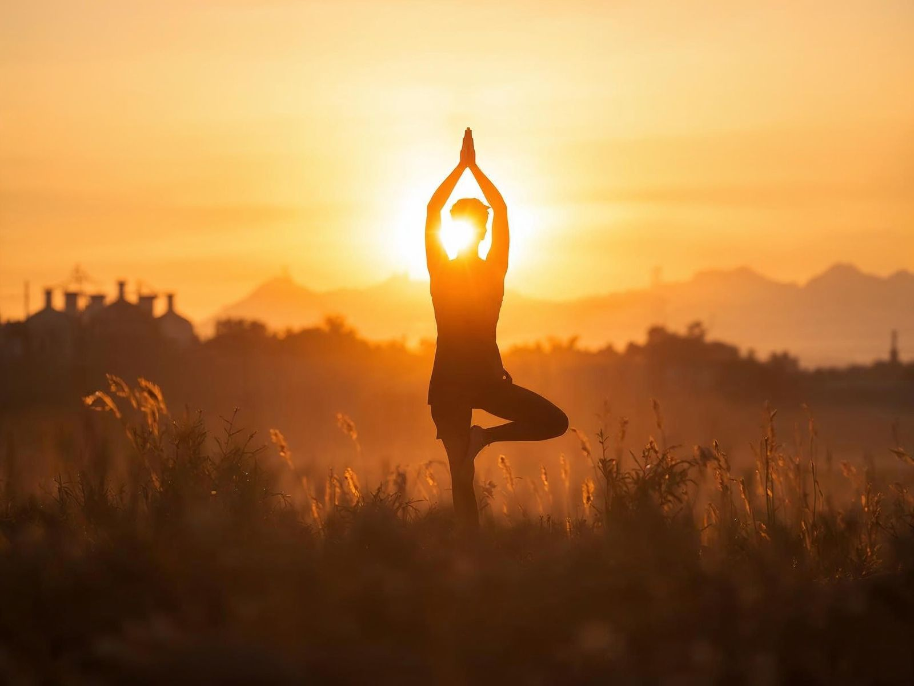

土 Terre · 水 Eau · 風 Air
Les pratiques
Trois voies complémentaires des arts martiaux : le sport pour l'ancrage, le bien-être pour l'apaisement, le yoga pour le souffle. Chacune se découvre gratuitement, quel que soit votre niveau.
Sport
Renforcement, mobilité, mouvement fonctionnel : des séances construites pour retrouver de l'énergie et une sensation de solidité intérieure. On travaille le corps pour ce qu'il apporte au reste — la posture, la vitalité, l'assurance.
Pour qui : toute personne qui veut se remettre en mouvement,
reprendre après une pause ou structurer sa pratique. Aucun prérequis.
Bénéfices : énergie stable, force fonctionnelle, meilleure posture, confiance corporelle.
Bien-être
Respiration, pleine présence, gratitude, reconnexion à soi. Des pratiques simples et régulières pour apaiser la pression intérieure et construire une stabilité émotionnelle qui tient dans les moments d'intensité.
Pour qui : celles et ceux qui ruminent, dorment mal,
ou sentent la pression monter plus vite qu'elle ne redescend.
Bénéfices : moins de tensions, meilleur sommeil, clarté mentale, calme disponible.
Yoga
Mobilité articulaire, postures, respiration : un yoga accessible et incarné, pour libérer les tensions accumulées et reconnecter le corps et l'esprit. On y développe l'interoception — cette capacité à écouter ce que le corps dit.
Pour qui : débutants bienvenus ; sportifs qui veulent
récupérer mieux ; toute personne en quête d'un temps pour soi.
Bénéfices : souplesse, meilleure posture, respiration ample, ancrage dans le corps.

Par où commencer ?